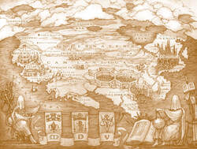
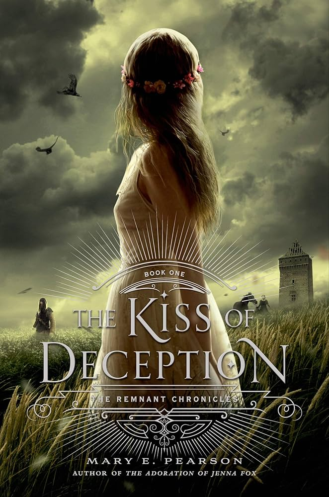
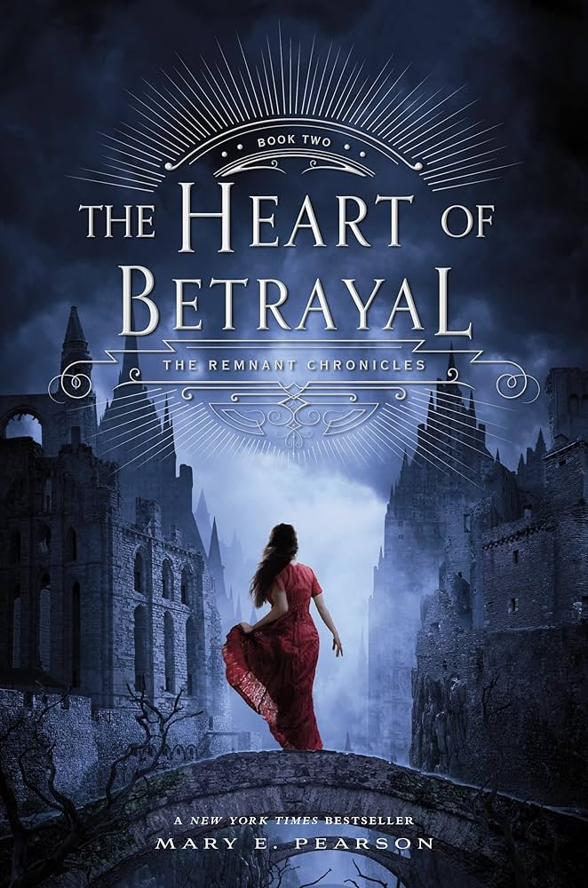
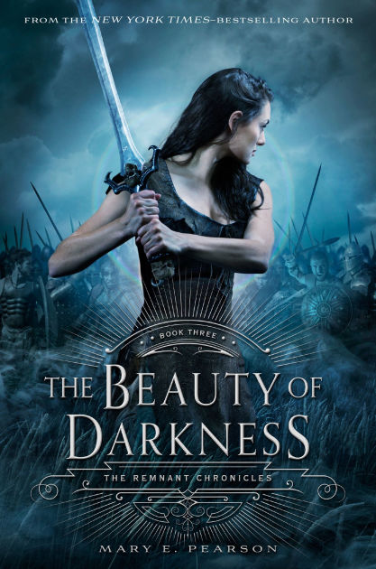

Remnant Chronicles

The Remnant Chronicles follows Princess Lia of Morrighan, who flees her unwanted political wedding only to find herself pursued by both the jilted Prince and a deadly Assassin, neither of whose identities she knows, as they all cross paths in a remote village. After a compelling deception and a tragic betrayal, Lia is captured and brought to the enemy kingdom of Venda, where she must navigate the dangerous court of the Komizar while wrestling with the truth of her own secret "Gift" of sight and the two men who love her. The series culminates in an epic confrontation where Lia must embrace her destiny and unite the fractured kingdoms against a rising tide of ancient prophecy and war to save her people and forge a new future for the Remnant world.



Today was the day a thousand dreams would die and a single dream would be born.
The day Lia flees her wedding day duty dies behind her, but she follows her dreams.
Don't let duty and fate control your future